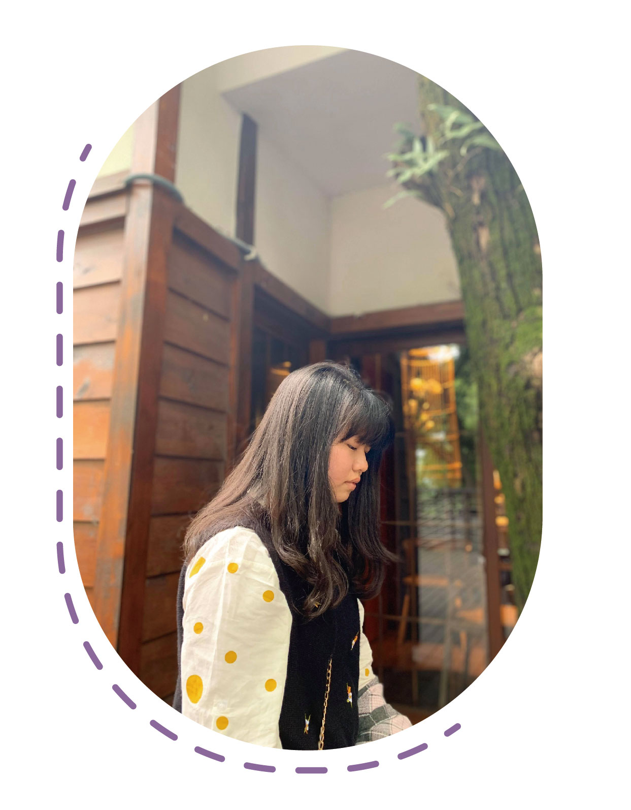

About me
姓名: 蔡聿婷 Cai,yu-ting
生日:91/09/19
個人專長:繪畫、攝影
連絡電話:0963369705
學歷
台南市南台科技大學 視覺傳達系商業設計組
桃園市天主教振聲高級中學 多媒體設計系
桃園市大溪仁和國民中學
桃園市八德國民小學
經歷
高一上 衛生股長
高二上 攝影小老師
高三上 數學小老師
高三下 數學小老師
高中畢業展 監製
能力
商業英文檢定 四級
印前製程-圖文組版PC 丙級
印前製程-圖文組版PC 乙級
關於我
本人現就讀於南臺科技大學視覺傳達設計系商業設計組，擔任學生。
學習設計相關知識、考取相關證照、提升學習專業成績、培養同儕團體間團結合作之默契。
在團體活動方面，班級比賽皆都熱情參與；並在高中三年級的畢業展中，靠著其創意及協調能力，獲得團體微電影組第一名的佳績。
此生對活動的專注力以及做事的負責任，充分的表現出團隊合作之精神。
在學習方面，此生思維新穎、明敏，有創造力，課程上表現專注。
學習上觀念清楚、理解力強，能有條理、有系統地分析、解決問題，具有獨立思考的能力。